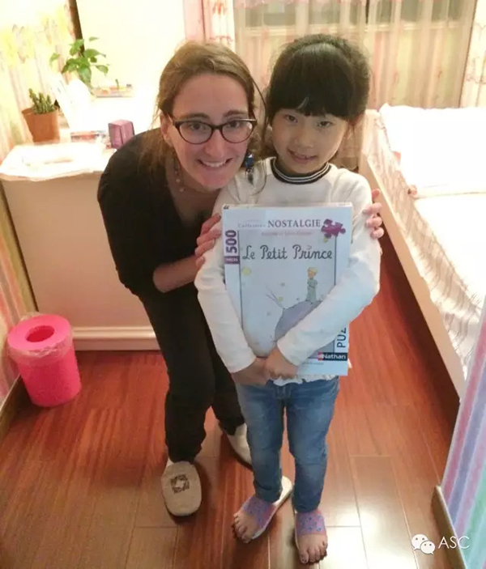
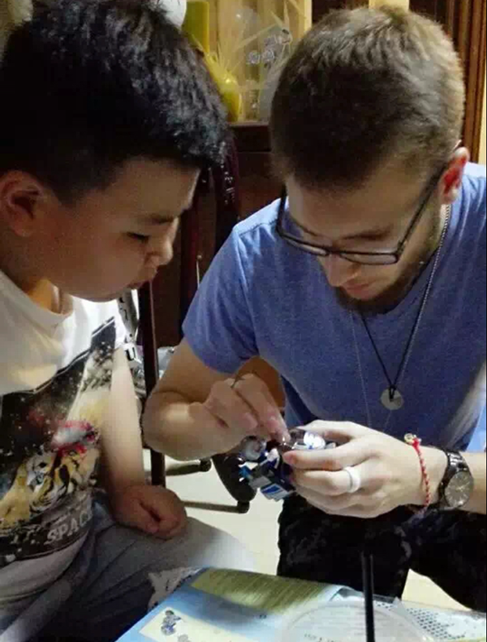

互惠动态
|
|
2016不一样的寒假——请一位外国大哥哥大姐姐陪孩子过年
虽然现在的南方刚刚开始有冷意，我们就已经开始为了中国家庭招收寒假互惠生的事忙起来了。中西方文化碰撞最为频繁的应该就数岁末年初这段时间了。中国的“节”在这段时间非常紧凑，对老外说来更是接连不断的稀奇与惊喜，因此家庭里的小朋友可以利用这段时间好好的和洋哥哥洋姐姐们介绍一下自己民族的节日，短短几天便可促进友情瞬间升温。

寒假和"洋家人"一起做什么？外出派和蹲家派各有千秋。
郊游——看咱“洋”家人和孩子在冬日暖阳下疯跑嬉戏；
远足——带“洋”家人登高望远踏雪寻梅细数大自然花鸟虫鱼；
玩海——跟“洋哥姐”学习堆沙技巧、比拼冲浪技能；
参观——博物馆、艺术馆、美术馆、民俗馆，让“洋哥姐”带孩子从另一个角度看中国；
动手——手工、绘图、沙画，“洋哥姐”一身特技，陪孩子创意一冬；
动口——衣食住行、“洋哥姐”如影随行；听孩子时刻中英双语互换、流利自如；
动脑——猜迷、读书、做作业，同样的事情不同的做法，让孩子在经历东西方思维碰撞后迅速成长；

在这个寒假，"洋家人"让家庭绽放异域风采！
最后，让我们回顾一下传统中国新年的习俗对应的英文吧！准备好向洋朋友秀一秀我们的美好传统了吗？小朋友们别忘了查一查问一问这些习俗都是怎么来的哟。
祭社（腊月廿三）——Kitchen God Worshipping
扫尘（廿三到除夕）——Dust Sweeping
贴春联（三十）——Sticking Couplets
挂年画（三十）——Hanging New Year Painting
年夜饭（除夕夜）——Chinese New Year Eve Dinner
守岁（除夕夜）——Sitting Out the Year
放爆竹（除夕夜）——Setting Off Firecrackers
拜年（正月初一）——Paying New Year Visit
压岁钱（正月初一）——Distributing Lucky Money to Kids
回娘家（初二、初三）——Wife Returning to Parents
接财神（正月初五）——Welcome the God of Wealth
送穷（正月初六）——Sending Away Poverty
ASC国际互惠生项目公众号ASCCENTER
互惠生最早起源于英、法、德国等自发的青年活动，是指给来自全世界的青年提供一个寄住在他国家庭里体验文化学习语言的机会，如今我们把国外互惠生请来家庭里，照顾自家的孩子，从小培养外文的语言环境，为孩子出国，全家移民打下优良基础，关注个【公众微信号】ASCCENTER了解更多国外有趣资讯。
ASC国际互惠生客服号ASC-CENTER
24小时客服个人微信号，对接家庭与互惠生之间的问题，对互惠生项目有陌生不熟悉或者想了解更多信息的可以关注【个人微信号】ASC-CENTER与客服详细交流。